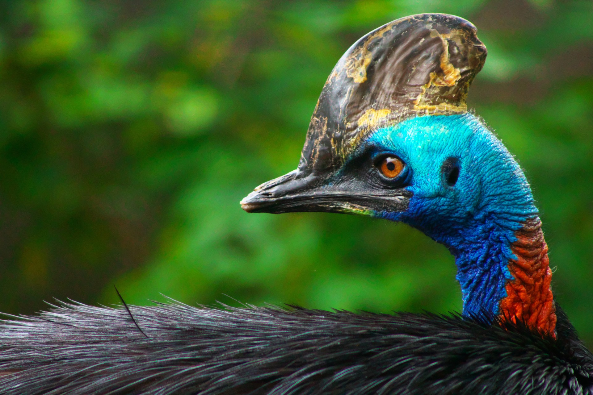

CASUAR
A ave mais perigosa do mundo
A ave mais perigosa do mundo é o casuar, que é encontrado na Oceania. O casuar, uma ave da Oceania que pode passar de 1,5 metro de altura e pesar cerca de 60 quilos. Ele tem um gene terrível e, quando fica zangado, parte com tudo para cima do seu oponente.
A plumagem do casuar é abundante e de cor acinzentada, com penas coloridas na base do pescoço. Estas aves têm uma crista encarnada no alto da cabeça, que cresce devagar durante os primeiros anos do animal e tem função desconhecida. Além disso, O casuar é uma ave ágil, que pode correr a cerca de 50 km/h e saltar 1,5 m sem qualquer balanço. São animais normalmente pacatos e tímidos, que no entanto podem ser extremamente agressivos e perigosos para o homem para proteger o ninho ou as suas crias.